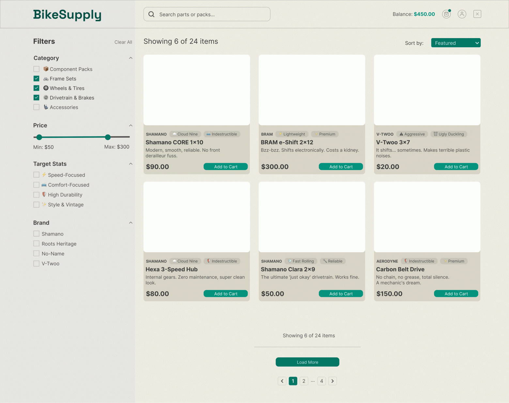
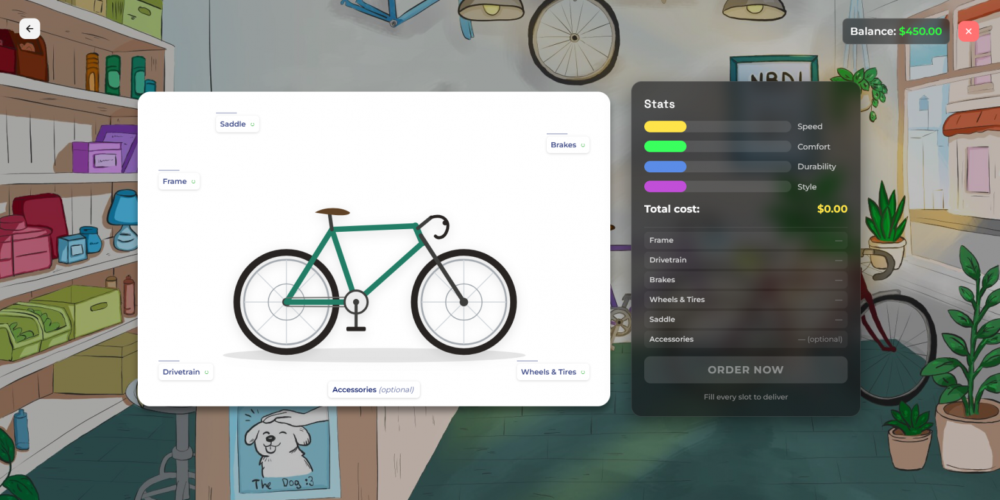
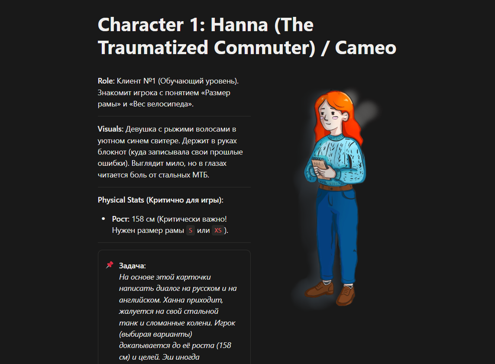
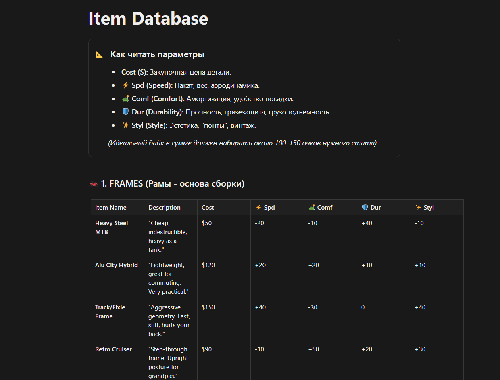
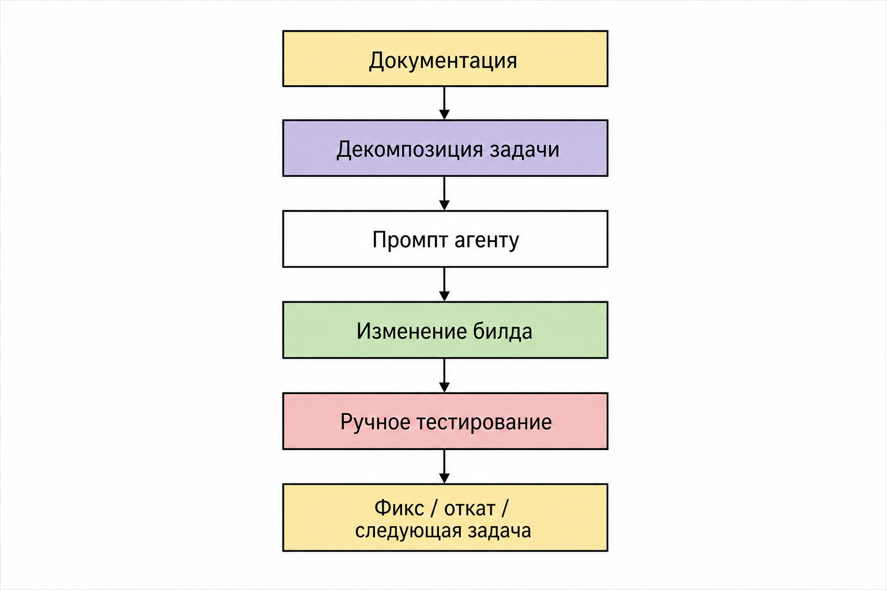
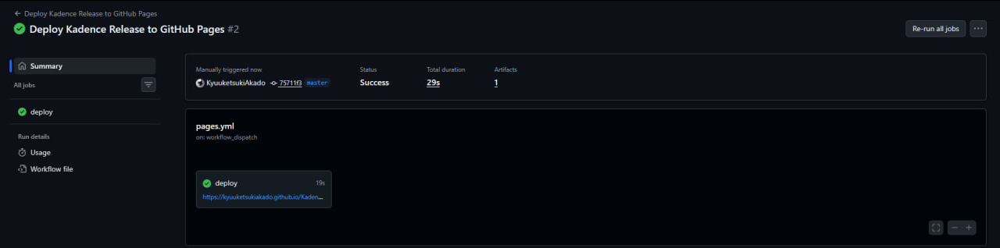
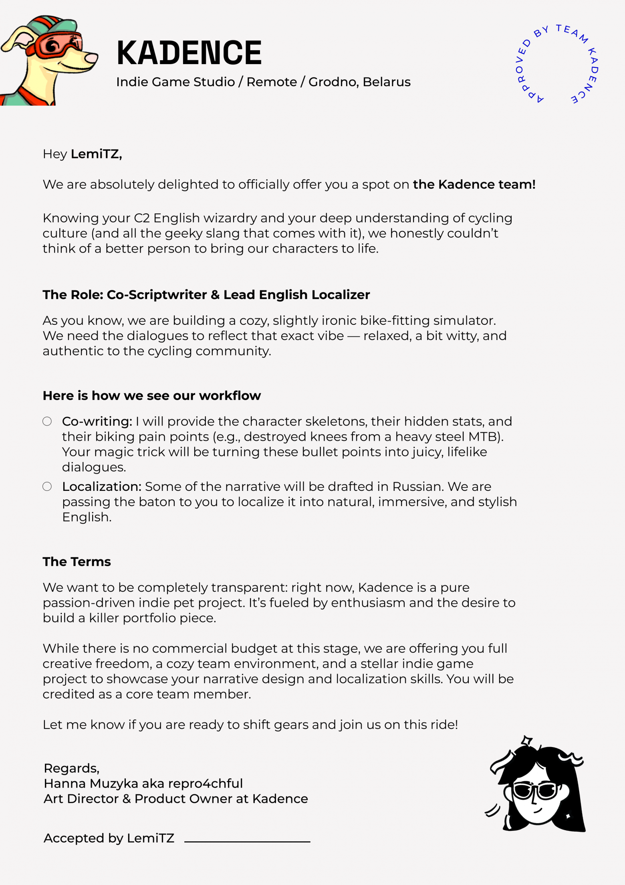
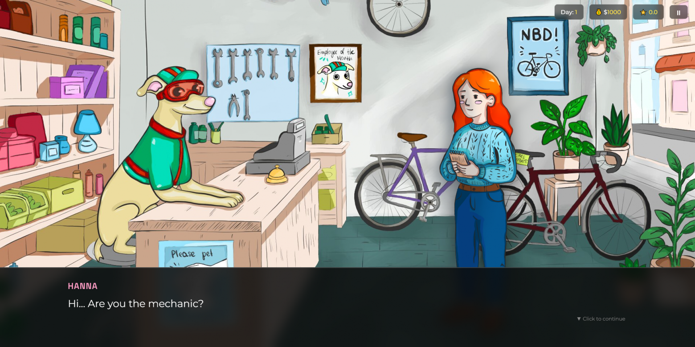
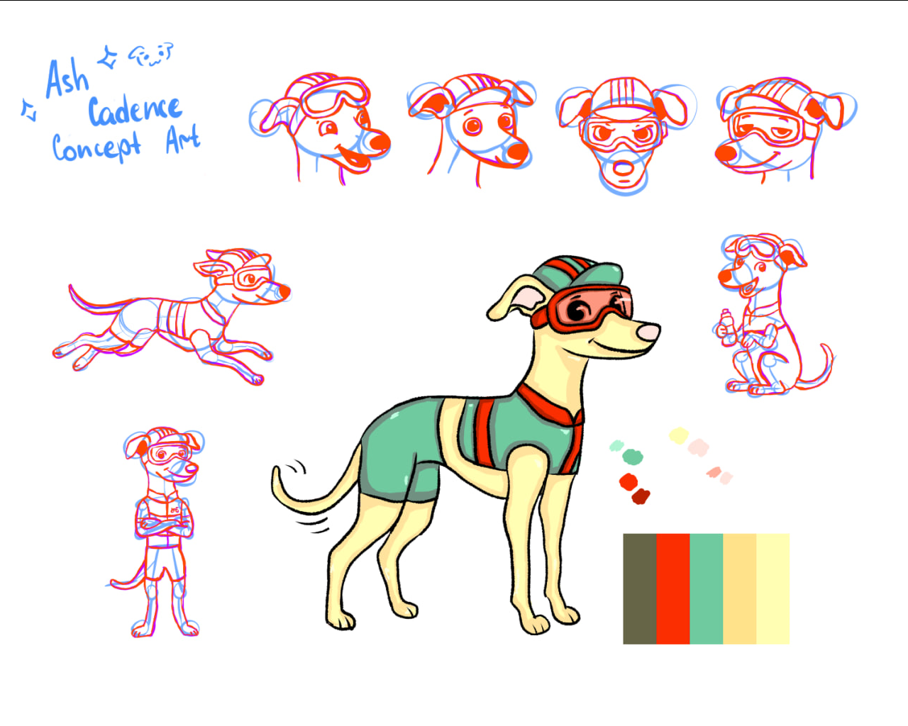

Меня зовут Анна. Я работаю Team Coordinator в IT‑компании и постепенно двигаюсь в сторону Product Design и UX/UI. Чтобы расти быстрее, я решила не ограничиваться теорией и начать запускать собственные пет‑проекты.
Помимо этого, меня крайне интересует велосипедная тематика. И однажды я столкнулась с проблемой при подборе нового байка для себя: у большинства сайтов с велосипедами что-то было не так. Где-то интерфейс оказывался неинформативным, где-то фильтры были настолько сложными, что сами повышали когнитивную нагрузку на пользователя.
Отсюда родилась идея сделать концепт-дизайн сайта магазина велосипедов, где не было бы места этим недостаткам. Я нарисовала маскота, продумала скелет сайта и хотела перейти к вайрфреймам. Но цельной картины в голове так и не сложилось.

Бывает, подумала я. А затем взглянула на маскота.
И вот тут пришёл инсайт: «А ведь этот пёсик отлично бы подошёл какой-нибудь игре».
Так начал зарождаться мой первый настолько масштабный продукт — инди-игра Kadence про будни в небольшой веломастерской.
Немного обо мне и почему здесь вообще оказался AI
По образованию я лингвист и преподаватель двух иностранных языков. Ещё с третьего курса, когда в общем доступе появился ChatGPT, меня крайне заинтересовала тема AI.
На протяжении двух лет я активно использовала разные LLM практически во всех сферах и начинаниях. Написала курсовую и дипломную работы о влиянии семантики промптов на результат визуальной генерации. В научных работах поднимала вопросы этики и правомерного использования AI, выступала на международных конференциях с этими темами. И параллельно всё это время наблюдала: за развитием феномена, за его последствиями и за тем, как меняется сама работа с информацией.
Сейчас я использую AI-агентов для реализации собственных задуманных проектов и постоянно узнаю что-то новое. И что я могу сказать на основе всего этого: работа с AI вовсе не недосягаема для гуманитария.
Наоборот, для него это может стать инструментом, который помогает воплотить в реальность то, что раньше не получалось из-за отсутствия технических знаний.
Я тому яркий пример. Но сразу обозначу важную вещь: AI не сделал игру вместо меня. Он помогал реализовывать решения, которые я сама придумала, декомпозировала, проверяла и принимала или отклоняла.
Что я хотела сделать
Kadence — это narrative-driven simulator про локальную веломастерскую. Игрок выступает в роли механика Ash, общается с посетителями, выясняет их потребности и собирает для каждого подходящий велосипед.
Мне хотелось не просто дать возможность собирать байки, а сделать этот процесс интуитивно понятным и отзывчивым. Чтобы игрок не перебирал детали вслепую, а постепенно понимал: клиент пришёл не просто за «велосипедом», у него есть конкретная история, ограничения и иногда довольно странные пожелания.

В демо вошли:
- сюжетные истории клиентов;
- сборка и кастомизация велосипедов;
- детали с уникальными характеристиками и свойствами;
- клиенты с индивидуальными потребностями и задачами;
- поддержка английского и русского языков;
- оригинальный саундтрек и звуковые эффекты.
Всего в базе 38 деталей шести типов:
- 8 рам;
- 8 трансмиссий;
- 6 вариантов тормозов;
- 7 комплектов колёс и покрышек;
- 4 седла;
- 5 аксессуаров.
Пять категорий являются основными обязательными слотами: рама, трансмиссия, тормоза, колёса и седло. Аксессуары идут отдельно.
В демо шесть клиентов. У каждого есть собственная история, бюджет, цели по характеристикам велосипеда и специальные условия. Иногда требования вполне рациональны. Иногда — например, «только без тормозов» — требуют от механика отдельно остановиться и подумать, точно ли он хочет это делать.

Почему я выбрала AI-агента
Я умею рисовать в диджитале, писать тексты и формулировать мысли, вести документацию, выстраивать пайплайн, заводить карточки на Kanban-доске, трекать прогресс, грамотно коммуницировать с людьми и принимать критику.
Но кодинг — не моё. Поэтому в этом вопросе я решила опереться на AI-агента.
При этом я не ставила задачу в духе «сделай мне игру». Такой подход довольно быстро превращает разработку в лотерею. Агент может что-то сгенерировать, но не будет знать, почему это решение должно существовать, какую пользовательскую проблему оно решает и что нельзя сломать по пути.
Мне нужно было самой держать продуктовую логику в голове, а агенту — помогать превращать её в работающий билд.
Как выглядел процесс
Первый месяц был самым насыщенным. Я от руки отрисовывала каждый арт, спрайт и интерфейс, продумывала логику, долго и упорно брейнштормила с LLM, общалась с людьми и собирала фидбек, писала документацию, генерировала саундтрек и карточки товаров, дизайнила интерфейсы в Figma, двигала карточки в Notion и коммитила на GitHub.
Этап дизайна, менеджмента, написания диалогов, отрисовки спрайтов и создания саундтрека занял около месяца.
Затем наступил этап, когда основные задачи были закрыты, и пришло время собирать билд. Здесь в ход пошёл мой опыт prompt engineering.
Задачи ставились поэтапно: сначала делался каркас игры, затем на него наращивалось «мясо» — добавлялись фичи, исправлялись визуальные баги, уточнялась логика и постепенно полировался пользовательский опыт.
Глобальные фичи никогда не реализовывались одним запросом. Сначала — маленький работающий кусок, потом проверка, затем следующий слой.
Например:
- сначала навигация между основными экранами;
- затем диалоги;
- затем логика сборки;
- затем валидация обязательных слотов;
- затем расчёт характеристик и результата;
- затем сохранения, настройки и полировка интерфейса.
Этот этап оказался самым интенсивным и дал мне больше всего практики в работе с AI как инструментом разработки.
Репозиторий как база данных проекта
Я сразу понимала, что без структуры AI-агент начнёт «плыть». Поэтому репозиторий стал не просто местом, куда складывается код, а базой данных всего проекта.

На протяжении разработки я вела документацию по нескольким направлениям:
- Game Design Document и core game design;
- flow chart основного прохождения;
- сценарии клиентов и варианты диалогов на русском и английском;
- отзывы клиентов;
- item database;
- цели клиентов и их игровая логика;
- словарь тегов и характеристики тегов;
- внутренние цены деталей;
- UX/UI guidelines для экранов;
- art и sprite documentation;
- README для саундтрека и звуковых эффектов.
В итоге в репозитории лежали не только index.html и картинки. Там была собрана вся логика продукта: от идеи клиента до того, какое седло он должен получить и почему.
Агент получал ссылку на репозиторий с полной документацией и работал не исходя из абстрактного описания, а опираясь на актуальные материалы проекта. Это сильно помогло выстроить пайплайн и уменьшить количество решений «из воздуха».
Как я контролировала результат

Результат я контролировала с помощью ручного тестирования. Проверяла каждый пиксель, пыталась найти edge cases и оперативно их фиксировала.
Я не проводила полноценного code review. Вместо этого сравнивала билды между собой, возвращалась к предыдущим версиям, если новая ломала логику, и прогоняла сценарии от начала до конца.
Количество билдов, сделанных за всё время, считать боюсь. Число будет немаленьким.
Чтобы не терять контроль над контекстом, я регулярно начинала новые сессии. Контекстное окно часто заканчивалось, и продолжать разговор с уже «уставшим» агентом было не лучшей идеей.
Мой подход был довольно простой:
- новая сессия;
- краткое описание текущего состояния;
- ссылка на актуальную документацию;
- одна конкретная задача;
- проверка результата;
- фиксация изменений.
Если билд ломался, я возвращалась к предыдущей стабильной версии, сравнивала изменения и снова тестировала всё от и до.
Что пошло не так
GitHub и деплой
Краеугольным камнем в первую очередь оказался мой небольшой опыт работы с GitHub. Впервые в жизни мне пришлось разобраться с pull request и понять, как с помощью GitHub Actions сделать автоматический деплой статической web-игры на GitHub Pages.

Игра написана на довольно простом стеке:
HTML5
CSS3
Vanilla JavaScript
HTML Audio API
Web Audio API
LocalStorage
GitHub Actions
GitHub PagesНикаких Unity, Godot, React или backend-сервера. Это статическая web-игра, которая запускается прямо в браузере.
В итоге сейчас достаточно сделать push в репозиторий — GitHub Actions собирает папку релиза и публикует её на GitHub Pages.
Игровая математика
Также было сложно просчитать все статы. Расчёт формул и базовая математика генерировались с помощью LLM, но даже так кое-где оставались ошибки. В билдах они превращались в ситуации, когда игрок не мог нормально продолжить игру или получал результат, которого не ожидал.
Мораль довольно простая: нужно всё и всегда перепроверять. Если не самому, то хотя бы доверить это отдельному агенту и проверить уже его работу. Один AI-агент не становится источником истины только потому, что уверенно написал формулу.
Переоценка логики
На бумаге всё может работать хорошо и математически сходиться. А затем открываешь билд, проводишь в нём некоторое время и понимаешь, что в реальности всё не так просто.
Игрок не видит вашу красивую формулу. Он видит интерфейс, пытается понять цель, собирает велосипед, получает результат и думает: «Почему я провалился?»
Поэтому сейчас я всё ещё собираю фидбек и провожу аудит продукта — уже не только технический, но и игровой. Проверяю, насколько понятны цели, насколько связаны диалоги и механики, не превращается ли сборка в подбор чисел и действительно ли наказания ощущаются справедливыми.
Недооценка собственных возможностей
А вот здесь была обратная ситуация. Я недооценила себя.
Релиз планировался на 3–4 месяца работы, а по итогу демо было сделано примерно за 1,5 месяца.
Кстати, в какой-то момент Kadence перестала быть полностью сольным проектом. В написании диалогов мне помог LemiTZ — спасибо ему за саркастическую и остроумную составляющую игры.
Я даже сделала для него настоящий оффер от Kadence Team. Конечно, без коммерческого бюджета на этом этапе — зато с максимально честными условиями, свободой творчества и обещанием записать его в core team. Это был не юридический трудовой оффер, а мой игровой способ оформить приглашение в творческую команду.
Кажется, это был тот момент, когда проект окончательно начал ощущаться не просто как эксперимент с AI и дизайном, а как настоящая маленькая инди-команда.

Что пришлось вырезать
Изначально идей было гораздо больше, чем могло поместиться в первый релиз. Из демо пришлось убрать:
- заметки;
- подсказки по сборке велосипедов;
- предысторию и подробный lore;
- рынок бывших в употреблении деталей;
- случайных покупателей;
- систему отзывов на сайте магазина;
- паки деталей.
Возможно, звучит немного грустно, но именно это и позволило собрать vertical slice — небольшую, но цельную версию продукта, по которой уже можно понять, о чём игра вообще.
Целью было не показать все крутые фичи и не построить идеальный UX/UI. Целью было показать суть: клиент приходит со своей проблемой, игрок слушает, анализирует и собирает велосипед.
Что бы я сделала иначе
Изначально мне предлагали много идей. Я их выписывала, а затем обдумывала, стоит ли всё это внедрять.
Сейчас я понимаю, что стоило разбивать идеи не только по категориям, но и по соотношению затраченного времени и результата: сколько займёт фича, насколько повлияет на геймплей и насколько улучшит впечатление пользователя.
Также сначала я думала обойтись без документации. Потом всё же приняла решение писать её — и писать подробно. Это оказалось одним из лучших решений в процессе разработки.
Документация помогала не только агенту. Она помогала мне самой не потерять исходную идею, отличать обязательное от желательного и возвращаться к логике проекта после очередной волны новых задумок.
Ещё одной моей ошибкой была разработка без строгих временных рамок и дедлайнов. Я думала, что это даст больше свободы. На практике распыляться на пять задач разного формата одновременно — худшее решение.
Приоритизация, распределение времени и планирование — лучшие друзья в любой ситуации. Даже если это пет-проект и дедлайн придумал ты сам.

Главные выводы
- Не стоит бояться нового. Однако нужно объективно оценивать масштаб предстоящей работы и не бросаться в неё с головой, не проведя хотя бы базовый ресерч и не составив roadmap.
- Не нужно пытаться реализовать всё и сразу, даже если очень хочется. Бэклог существует именно для того, чтобы выгрузить в него все планируемые фичи, а затем ранжировать их по степени важности.
- Документация — не бюрократия и не артефакт «на потом». В работе с AI-агентом она становится частью контекста и способом удерживать продуктовую целостность.
- AI-агент не снимает ответственность за архитектуру, логику и качество. Он ускоряет реализацию, но решение о том, что именно реализовывать и как это должно работать, всё равно остаётся за человеком.
- На июль 2026 года даже гуманитарий, не умеющий кодить, может поднять собственный продукт. Но для этого нужно не просто «уметь писать промпты», а уметь формулировать задачу, декомпозировать её, вести документацию и тестировать результат.
Kadence для меня — не доказательство того, что разработчики больше не нужны. Скорее, это доказательство того, что граница между «я не умею» и «я могу попробовать» стала гораздо тоньше.
И иногда всё начинается с одного нарисованного пёсика.
